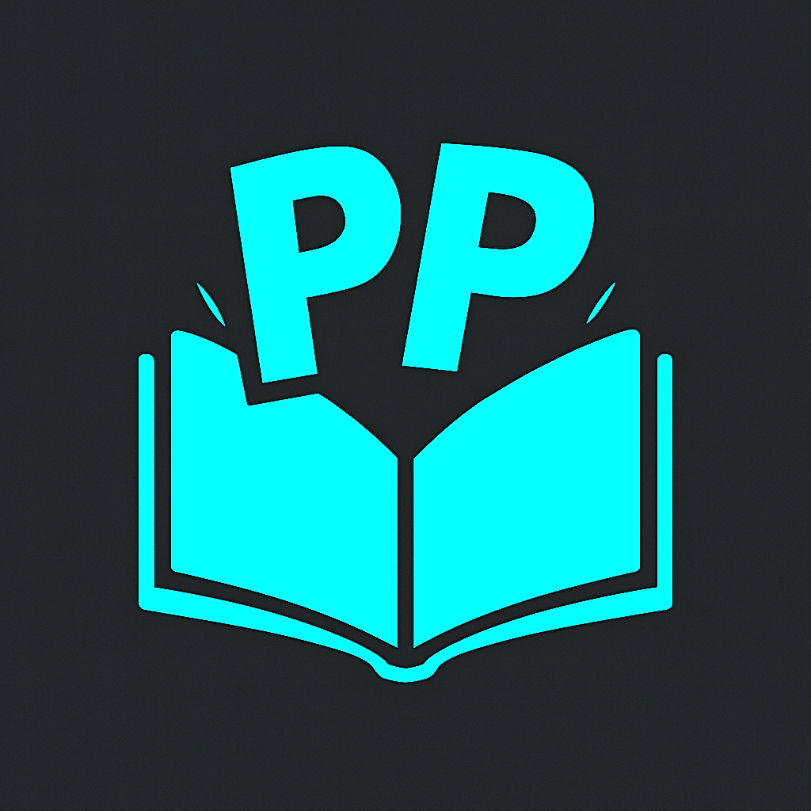
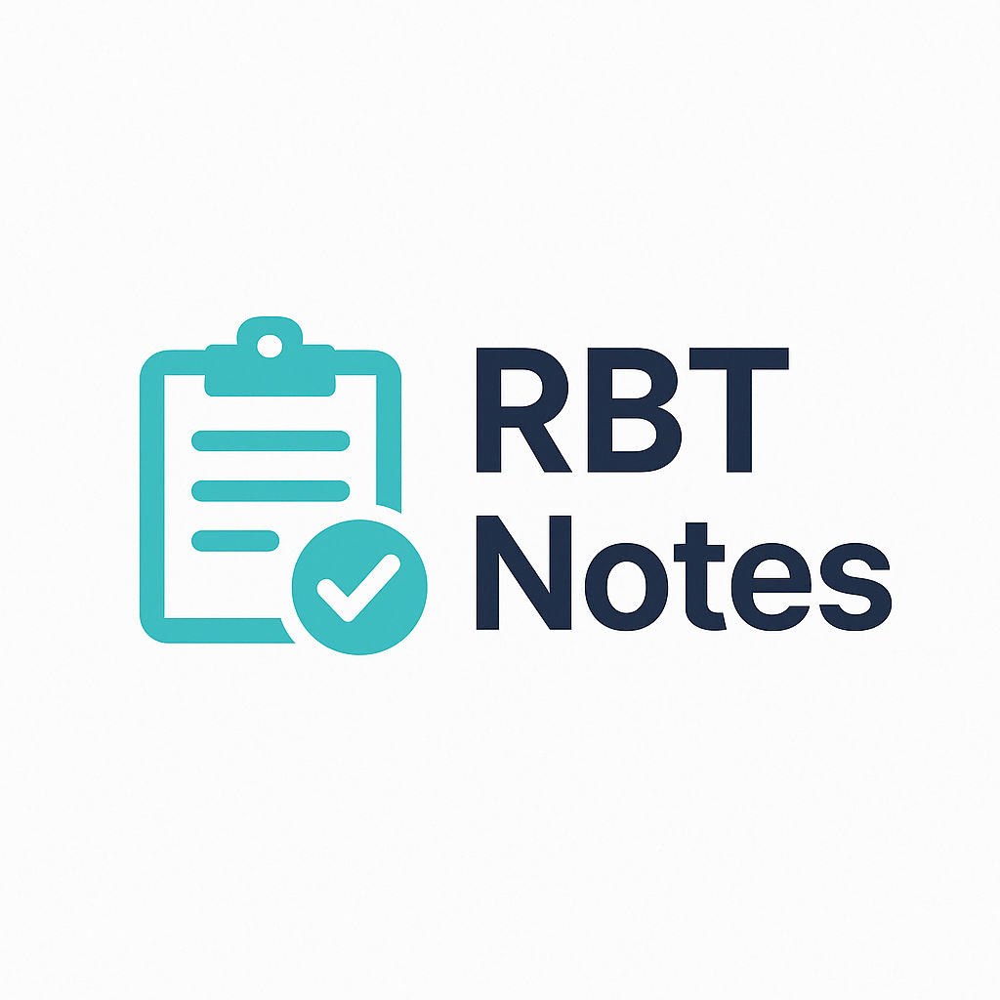

Projects
AI Reply
AI Reply is a cutting-edge app that harnesses the power of artificial intelligence to generate personalized, context-aware replies to your messages. Whether you're responding to friends, family, colleagues, or clients, this intelligent assistant is designed to assist you in crafting the ideal response for any scenario.
Download on Google Play
Panel Play
Panel Play is a web platform for manga readers and independent creators. It offers a curated browser-based manga gallery for readers 16 and older, plus a premium creator submission workflow where original works can be reviewed, featured in a one-week homepage Spotlight, and earn 50% of net revenue from qualifying new paid subscriptions tied to that Spotlight after Stripe fees.
Learn About Panel PlayImpulse Cooking
Impulse Cooking is a pantry-led mobile workflow being prepared for Android and iOS. It brings pantry inventory, household collaboration, shopping coordination, recipe discovery, cook-mode deduction, and AI assistance into one app so households can track what they have, decide what to cook, fill shopping gaps, and keep kitchen state current after meals.
The app includes barcode and manual pantry intake, quantity and expiration tracking, pantry-aware recipe ideas, appliance-aware filtering, shared shopping lists, cookbook saving, custom recipe creation, and guarded AI cooking support.
Chat Oasis
Chat Oasis is a real-time global group chat platform designed for spontaneous, anonymous conversation. Built with privacy in mind, Chat Oasis does not store user data or messages—instead, it displays the latest 1,000 messages upon joining, which reset locally upon refresh. Users must be 18+, agree to the terms of service, and complete a CAPTCHA to join. It's a lightweight, secure, and welcoming space where anyone can instantly connect with people from around the world.
Enter the OasisSuitemates
Suitemates is an Android application developed at Iowa State University that helps students and young renters find compatible roommates and ideal living spaces. Users can create detailed profiles, set preferences like school, major, gender, age, interests, and pets, and swipe through potential roommate and housing matches. The app includes real-time messaging, admin moderation tools, housing listings for landlords, and match-based housing suggestions after users find a compatible roommate.
Built using Android Studio (Java) for the frontend and Spring Boot for the backend, with Maven and Gradle as build tools, this project demonstrates our full-stack development skills and collaborative project planning in a real-world context.
Suitemates was created by myself,
Jacob Schulmeister,
Mason Kotlarz, and
Marcus Barker as part of a software engineering course at Iowa State University. Together, we got an award for having the best project.

RBT Notes
RBT Notes is an AI-assisted session reporting tool I developed with my classmates Antonio Nazco, Christopher Hall, and Daniel Cortina during a software engineering project at Florida International University. Designed specifically for Registered Behavior Technicians (RBTs), the application streamlines the documentation process by using structured input forms and OpenAI’s ChatGPT to generate professional, regulation-compliant session reports. I focused on the frontend development—designing a clean, intuitive interface, implementing sessionStorage for user input retention, and structuring the JSON payload for backend compatibility. The full-stack system, built with React.js and FastAPI, supports session review and PDF export, making it practical for real-world use.

Impulse Analyzer
Built for Impulse AI LLC, Impulse Analyzer is a self-hosted AI analytics platform that connects directly to client SQL databases with no data migration or external warehouse requirement. I designed the full UI/UX experience, AI graphing workflows, calendar syncing, AI calendar integration, and employee directory integrations.
I also implemented Stripe payments and billing, license-key-based company mapping, AI endpoint usage tracking, daily cost aggregation with markup logic, performance optimizations, and chat exporting. The platform supports natural-language-to-SQL querying, context-aware follow-up questions, and secure in-session data handling inside client infrastructure.
Ghost Automations Discord Bot
Ghost Automations Discord Bot is an AI-powered support assistant I built for Discord communities. It is connected to an AI model, hooked into a vector database, and uses retrieval-augmented generation (RAG) to retrieve software-specific support knowledge before generating responses.
This architecture helps the assistant provide faster, more accurate answers by grounding each response in relevant documentation stored in the vector database.